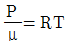
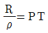
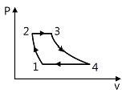

항공기관정비기능사 (2007-09-16 기출문제)
1과목: 비행원리
1. 헬리콥터에서 주기적 피치 제어간(cyclic pitch control lever)을 사용하여 조종할 수 없는 비행은 어느 것인가?
- 전진비행
- 상승비행
- 측면비행
- 후퇴비행
(정답률: 74%)

2. 조종간과 승강키가 기계적으로 연결되어 있을 때 조종력과 승강키의 힌지 모멘트(HINGE MOMENT)와의 관계식으로 옳은 것은? (단, Fe : 조종력, He : 승강키 힌지 모멘트, K : 조종계통의 기계적 장치에 의한 이득)
- Fe＝K×He
- Fe＝K÷He
- Fe＝K2×He
- Fe＝He÷K
(정답률: 84%)
3. 동점성계수 v의 단위로서 옳은 것은?
- kg/m·sec
- kg/m3
- m2/sec
- ㎜/kg
(정답률: 46%)
4. 날개에 발생하는 표면마찰항력이 20kgf, 압력항력이 50kgf 이며, 유도 항력이 60kgf일 때 형상항력 D와 전항력 D는 각각 얼마인가?
- D＝70kgf, D＝110kgf
- D＝80kgf, D＝110kgf
- D＝70kgf, D＝130kgf
- D＝80kgf, D＝130kgf
(정답률: 53%)
5. 비행기의 무게가 1,500kgf이고, 여유마력이 150마력일 경우에 상승률은 얼마인가?
- 0.75m/s
- 7.5m/s
- 75m/s
- 750m/s
(정답률: 59%)
6. 동적세로안정의 단주기 운동 발생 시 조종사가 대처해야 하는 방법으로 가장 올바른 것은?
- 즉시 조종간을 작동시켜야 한다.
- 받음각이 작아지도록 조작해야 한다.
- 조종간을 자유롭게 놓아야 한다.
- 비행 불능상태이므로 즉시 탈출하여야 한다.
(정답률: 83%)
7. 스핀(Spin) 현상에 대한 설명으로 가장 올바른 것은?
- 자동회전과 순항이 조합된 비행
- 자동회전과 상승이 조합된 비행
- 자동회전과 선회가 조합된 비행
- 자동회전과 수직강하가 조합된 비행
(정답률: 59%)
8. 압력(P), 밀도(ρ), 비체적(v), 온도(T), 기체상수(R), 점성계수(μ)가 주어질 때, 이상기체의 상태방정식으로 가장 올바른 것은?

- Rv=PT

- ρRT
(정답률: 53%)
9. 비행기가 수평비행을 하기 위한 조건으로 가장 올바른 것은?
- 양력과 무게가 같아야 한다.
- 양력과 항력이 같아야 한다.
- 항력과 무게가 같아야 한다.
- 추력과 양력이 같아야 한다.
(정답률: 70%)
10. 비행기의 턱 언더(Tuck under) 현상을 자동적으로 수정할 수 있게 해 주는 장치를 무엇이라 하는가?
- 마하 트리머(Mach trimmer)
- 요 댐퍼(Yow damper)
- 드래그 슈트(Drag shute)
- 오버행 밸런스(Overhang balance)
(정답률: 76%)
11. 주 회전 날개의 회전에 의해 발생되는 토크(Torque)를 상쇄하고 방향을 조종하는 것은?
- 꼬리 회전 날개
- 허브(hub)
- 플랜지 힌지
- 리드래그 힌지
(정답률: 86%)
12. 비행기 날개골의 양·항력 특성이 좋다는 것을 가장 올바르게 설명한 것은?
- CLmax가 크고, CDmin이 작다.
- CLmax가 크고, CDmin이 크다.
- CLmax가 작고, CDmin이 작다.
- CLmax가 작고, CDmin이 크다.
(정답률: 74%)
13. 프로펠러의 자이로 모멘트(gyro moment)의 특성을 자이로스코프의 어떤 특성에 기인하는가?
- 강직성(rigidity)
- 전자효과(pendulum effect)
- 섭동성(precession)
- 회전효과(rotation effect)
(정답률: 44%)
14. 날개의 뒷전에 출발와류가 생기게 되면 앞전 주위에도 이것과 크기가 같고 방향이 반대인 와류가 생기는데 이것을 무엇이라 하는가?
- 속박 와류
- 날개 끝 와류
- 말굽형 와류
- 유도 와류
(정답률: 76%)
15. 압력의 변화에 관계없이 밀도가 일정한 유체를 무엇이라 하는가?
- 비점성 유체
- 비압축성 유체
- 점성 유체
- 항밀도 유체
(정답률: 70%)
16. 다음 중 “시한성 정비”를 영어로 옳게 표시한 것은?
- on condition maintenance
- condition monitoring maintenance
- age sampling maintenance
- hard time maintenance
(정답률: 82%)
17. 다음 중 와셔의 역할로 가장 관계가 먼 것은?
- 볼트와 너트에 의한 작용력을 고르게 분산되도록 한다.
- 볼트나 스크루의 그립 길이를 조정 가능하도록 한다.
- 진동을 흡수하고, 너트가 풀리는 것을 방지한다.
- 볼트의 길이가 짧을 때 사용한다.
(정답률: 66%)
18. 오일필터(OIL FILTER), 연료필터(FUEL FILTER) 등의 원통 모양의 물건을 장·탈착할 때 표면에 손상을 주지 않도록 사용되는 공구는 어느 것인가?
- 어져스테이블 렌치(ADJUSTABLE WRENCH)
- 인터록킹 죠인트 플라이어(INTERLOCKING JOINT PLIER)
- 스트랩 렌치(STRAP WRENCH)
- 콘넥터 플라이어(CONNECTOR PLIER)
(정답률: 72%)
19. 마이크로미터를 좋은 상태로 유지하고, 측정값의 정확도를 높이고자 할 때의 주의사항으로 가장 관계가 먼 내용은?
- 마이크로미터를 보관할 때 앤빌과 스핀들이 서로 맞닿게 하여 흔 들림을 방지해야 한다.
- 마이크로미터 스크루는 블록 게이지를 사용하여 정기적으로 점검한다.
- 마이크로미터 기구에 이물질이 끼여 원활하지 못할 때는 이를 닦아낸다.
- 심블을 잡고 프레임을 돌리면 스크루가 마멸되므로 주의한다.
(정답률: 86%)
20. 소화기의 종류에 따른 취급방법에 대한 설명으로 가장 올바른 내용은?
- 물펌프 소화기 : A급 화재의 진화에 사용되며 전기 화재에 사용되기도 한다.
- 이산화탄소 소화기 : B급 및 C급 화재의 진화에 사용되고, 취급 시 인체에 묻어도 무해하다.
- 브로모클로로메탄 소화기 : D급 화재에만 사용되고 밀폐된 공간 에서 취급해야 한다.
- 분말 소화기 : B급 및 C급 화재의 진화에 사용되며 분말형태의 소화제를 실린더 속에 가압상태로 보관하여 사용한다.
(정답률: 68%)
2과목: 항공기정비
21. 안전에 직접 관련된 설비 및 구급용 치료 설비 등을 쉽게 알아보게 하기 위한 안전색으로 옳은 것은?
- 붉은색
- 녹색
- 파란색
- 오렌지색
(정답률: 90%)
22. 항공기 방식작업의 하나로 전해액에서 금속을 양극으로 하고, 전류를 통하여 양극에서 발생하는 산소에 의하여 알루미늄과 같은 금속표면 에 산화피막을 형성하는 부식처리 방식은?
- 양극 산화 처리
- 알로다인 처리
- 인산염 피막 처리
- 알크래드 처리
(정답률: 74%)
23. 다음 중 수리를 위해 사용되는 리벳의 직경은 어떻게 정해지는가?
- 판의 두께
- 리벳 작업할 판의 모양
- 리벳 Shank의 길이
- 리벳간의 길이
(정답률: 84%)
24. 부품의 상태에 관계없이 일정한 사용시간 한계 내에 도달하면 항공기에서 부품을 장탈하여 정기적으로 분해, 점검하는 정비관리 방식은?
- 신뢰성 정비관리
- 예방 정비관리
- 특별 정비관리
- 사후 정비관리
(정답률: 41%)
25. 다음 중 육안검사에 관한 설명으로 가장 거리가 먼 것은?
- 가장 오래된 검사방법이다.
- 빠르고 경제적이다.
- 신뢰성은 검사자의 능력과 경험에 따라 좌우된다.
- 보조 기구를 사용하면 육안검사가 아니다.
(정답률: 86%)
26. 다음 중 안전결선 작업에 대한 내용으로 가장 거리가 먼 것은?
- 안전결선을 신속하고 일관성 있게 하기 위해서는 티 핸들을 사용한다.
- 안전결선은 한 번 사용한 것은 다시 사용하지 못한다.
- 와이어를 꼴 때에는 팽팽한 상태가 되도록 한다.
- 안전결선의 절단은 직각이 되도록 자른다.
(정답률: 80%)
27. 항공기의 세척을 알칼리 세제로 할 경우의 특징으로 가장 관계가 먼 것은?
- 인화성이 없다.
- 독성이 없다.
- 추운 날씨에 적합하다.
- 페인트칠한 표면이 변색되지 않는다.
(정답률: 64%)
28. 구성품을 항공기로부터 장탈하여 전문공장에서 시험 장비를 이용하여 작동시험 및 측정을 해보고, 필요한 경우에는 분해 및 세척을 한 후 에 단순한 수리 조치를 취하는 정비작업은 무엇인가?
- 기능 점검
- ISI 검사
- 노화표본 검사
- 벤치 체크
(정답률: 50%)
29. 청력 상실 및 고막파열의 정도가 될 수 있는 소음으로 가장 옳은 것은?
- 25dB(A)
- 50dB(A)
- 80dB(A)
- 150dB(A)
(정답률: 84%)
30. 색조침투탐상검사(dye penetrant inspection)시 사용하는 탐상제와 가 장 거리가 먼 것은?
- 세척제
- 현상제
- 인화제
- 침투제
(정답률: 66%)
31. 항공기가 운항 중에 고장 없이 그 기능을 정확하고 안전하게 유지할 수 있는 능력을 항공기 정비 용어로 무엇이라 하는가?
- 감항성
- 안전성
- 신뢰성
- 조종성
(정답률: 84%)
32. 격납고 내의 항공기에 배유 작업이나 정비 작업 중의 접지(ground) 사항으로 가장 올바른 것은?
- 항공기 자체와 연료차, 항공기 자체와 지면, 연료차와 지면에 접지한다.
- 항공기 자체와 연료차, 항공기 자체와 지면을 접지한다.
- 항공기 자체와 지면을 연결하여 접지한다.
- 항공기 자체와 연료차를 연결하여 접지한다.
(정답률: 80%)
33. Change 20[℃] to degrees ℉?
- 42.1
- 68
- 93.6
- 293
(정답률: 66%)
34. 토크렌치(Torque wrench)를 사용할 때의 주의사항으로 가장 관계가 먼 내용은?
- 토크를 걸어서 조이기 시작하면 조금씩 지정된 토크를 확인하면서 멈추었다가 다시 조인다.
- 토크렌치 사용 시 특별한 언급이 없으면 나사에 윤활해서는 안 된다.
- 토크렌치는 정기적으로 정밀도를 점검해야 한다.
- 힘은 토크렌치에 직각으로 준다.
(정답률: 77%)
35. 기체 판금작업에서 두께가 0.6in인 금속판재를 굽힘반지름 0.135in 로 하여 90° 로 굽힐 때 세트백(S.B)은 얼마인가?
- 0.195in
- 0.125in
- 0.⑤1in
- 0.017in
(정답률: 70%)
36. 배기 밸브의 밸브 간격을 냉간 간격으로 조절해야 하는데 열간 간격으로 조절하였을 경우 배기 밸브의 밸브 개폐시기로 옳은 것은?
- 늦게 열리고, 일찍 닫힌다.
- 늦게 열리고, 늦게 닫힌다.
- 일찍 열리고, 늦게 닫힌다.
- 일찍 열리고, 일찍 닫힌다.
(정답률: 48%)
37. 왕복기관의 매니폴드 압력계의 수감부는 어디에 설치하는가?
- 기화기 출구
- 기화기 입구
- 매니폴드
- 흡기밸브 입구
(정답률: 83%)
38. 압축 링 바로 밑 홈에 장착되며, 여분의 오일을 피스톤의 안쪽 구멍으로 내보내어 실린더 벽면에 유막의 두께를 조절하는 역할을 하는 링의 종류는?
- 오일 압축 링
- 오일 스크레이퍼 링
- 오일 와이퍼 링
- 오일 조절 링
(정답률: 64%)
39. 터빈엔진(turbine engine)에서 디퓨저 부분(diffuser section)을 가장 올바르게 설명한 것은?
- 압력을 감소하고 속도를 증대한다.
- 디퓨저(diffuser) 내의 압력을 균일하게 한다.
- 위치에너지를 운동에너지로 바꾼다.
- 속도에너지를 압력에너지로 바꾸어 연소실로 보낸다.
(정답률: 71%)
40. 9기통 성형 기관에서 회전 영구자석이 4극형이라면 회전 영구자석의 회전속도는 크랭크축의 회전속도의 몇 배가 되는가?
- 8/9
- 4/9
- 9/8
- 5/8
(정답률: 49%)
3과목: 항공기관
41. 농후한 공기-연료 혼합비에 의해 지정된 한계치 이상으로 배기가스 온도가 상승하는 불만족스러운 시동을 무엇이라 하는가?
- 과열 시동(hot start)
- 결핍 시동(false start)
- 시동불능(no start)
- 아이들 시동(idle start)
(정답률: 71%)
42. 다음 중 항공기 왕복기관을 시동한 후 제일 먼저 점검해야 되는 것은?
- 오일압력
- 연료 압력
- 다기관 압력
- 실린더 헤드 온도(HEAD TEMPERATURE)
(정답률: 44%)
43. 체적을 일정하게 유지시키면서 단위질량을 단위온도로 올리는데 필요한 열량을 무엇이라 하는가?
- 비열비
- 엔탈피
- 정압비열
- 정적비열
(정답률: 47%)
44. 압축비를 변화시키면서 작동시킬 수 있는 CFR 기관의 주 기능은 무엇인가?
- 연료의 안티노크성 측정
- 연료의 기화성 측정
- 윤활유의 점도 측정
- 윤활유의 비중 측정
(정답률: 68%)
45. 항공기용 왕복기관에서 크랭크축의 변형이나 비틀림 진동을 막아주 기 위하여 무엇을 사용하는가?
- 카운터 웨이트
- 다이내믹 댐퍼
- 스테이틱바란스
- 바란스 웨이트
(정답률: 84%)
46. 다음 중에서 가스터빈 기관의 열효율을 증가시키는 가장 좋은 방법은?
- 주변온도와 항공기 속도를 증가시키고, 터빈효율을 향상시킨다.
- 주변온도와 항공기 속도를 증가시키고, 압축기 단열효율을 향상시킨다.
- 터빈입구 온도를 증가시키고, 터빈과 압축기의 단열효율을 향상시킨다.
- 터빈입구 온도를 감소시키고, 항공기 속도와 터빈효율을 향상시킨다.
(정답률: 35%)
47. 공랭식 왕복기관에 공급되는 냉각공기의 공급원이 아닌 것은?
- 압축기 블리드 공기
- 프로펠러 후류
- 냉각 팬에 의해 발생되는 공기
- 비행 중 발생하는 램 공기
(정답률: 39%)
48. 가스터빈 기관의 터빈 브레이드(Turbine blade)의 냉각 방법과 관계 가 없는 것은?
- 대류냉각(Convection Cooling)
- 확산냉각(Divergent Cooling)
- 공기막 냉각(Air Film Cooling)
- 침출냉각(Transpiration Cooling)
(정답률: 62%)
49. 프로펠러가 기관으로부터 전달받는 출력은 무엇인가?
- 운동마력
- 지시마력
- 제동마력
- 마찰마력
(정답률: 48%)
50. 가스터빈 기관의 점화장치 중에서 가장 간단한 점화장치는 어느 것인가?
- 직류 유도형 점화장치
- 교류 유도형 점화장치
- 교류 유도형 반대극성 점화장치
- 직류 유도형 반대극성 점화장치
(정답률: 58%)
51. 가스터빈 기관을 장착한 항공기에 역추력장치를 설치하는 이유로 가 장 옳은 것은?
- 이륙 시 출력을 최대로 하기 위해서
- 착륙 시 비행 안정성을 도모하기 위해서
- 착륙 시 착륙거리를 짧게 하기 위해서
- 이륙 시 최단시간 내에 엔진의 정격속도에 도달하기 위해서
(정답률: 84%)
52. 가스터빈 기관작동 중 연소실에 열점(hot spot) 현상이 일어날 때의 고장 원인으로 가장 옳은 것은?
- 연소실의 균열
- 연료노즐의 분사각도 결함
- 연료펌프의 결함
- 연소실의 냉각작용 이상
(정답률: 47%)
53. 가스터빈 기관의 윤활유 여과기가 보통 걸러낼 수 있는 입자의 최소 크기로 가장 적절한 것은?
- 50㎛
- 10㎛
- 1㎛
- 0.1㎛
(정답률: 23%)
54. 가스터빈 기관의 연료계통에서 1차 연료와 2차 연료로 분류시키고, 기관이 정지할 때 매니폴드나 연료노즐에 남아있는 연료를 외부로 방출하는 역할을 하는 장치는?
- FCU
- P&D valve
- Fuel nozzle
- Fuel heater
(정답률: 75%)
55. 터보제트 기관에서 저발열량이 12,000kcal/kg인 연료를 1초 동안에 0.13kg 씩 소모한다고 할 때, 추력 비연료 소비율(TSFC)은 약 몇 kg/kg·h인가? (단, 진추력()＝6,000kg, 비행속도()＝200m/s)
- 0.76
- 0.16
- 0.20
- 0.08
(정답률: 40%)
56. 가스터빈 엔진에서 배기노즐(Exhaust Nozzle)의 가장 중요한 사용 목적은?
- 터빈의 냉각을 얻기 위해
- 축방향 흐름을 얻기 위해
- 가스속도를 증가하기 위해
- 가스압력을 증가하기 위해
(정답률: 64%)
57. 왕복기관의 냉각에 주로 사용되는 공랭식기관의 구조에 해당되지 않는 것은?
- 냉각핀(cooling fin)
- 배플(baffle)
- 카울플랩(cowl flap)
- 공기덕트(air duct)
(정답률: 66%)
58. 항공기 왕복기관의 실린더 압축시험에서 시험을 할 실린더의 피스톤 위치로 옳은 것은?
- 압축하사점
- 압축하사점 전
- 압축상사점
- 압축상사점 전
(정답률: 46%)
59. [그림]은 브레이턴사이클의 P-V 선도이다. 3 → 4에서 이루어지는 과정은?

- 정적과정
- 단열팽창과정
- 단열압축과정
- 정압과정
(정답률: 62%)
60. 다음 중 윤활유 온도를 적당하게 유지시키기 위하여 윤활유의 냉각 기 통과 여부를 결정하는 장치는?
- 체크밸브
- 윤활유 여압 및 드레인밸브
- 차단밸브
- 윤활유 온도조절밸브
(정답률: 61%)